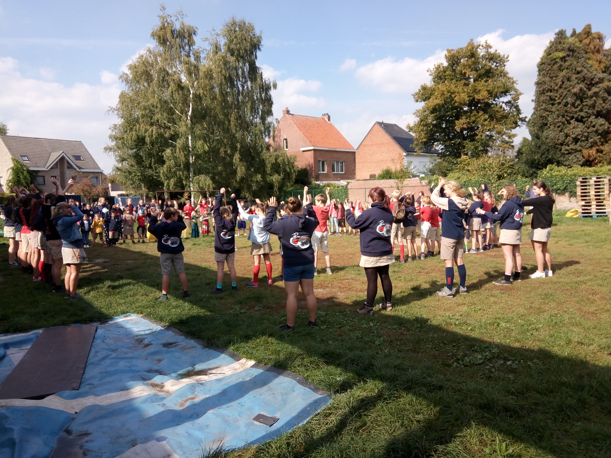

de enige gemengde chirogroep in Lier!
Elke zondagnamiddag van 2 tot half 6 spelen wij in onze toffe lokalen of op ons mooie grasplein.
Elke leeftijd vraagt een eigen aanpak, daarom verdelen wij -net als de meeste andere jeugdbewegingen- onze groep op in afdelingen. Zo kunnen wij een programma op maat van de leeftijd van je kind aanbieden én zorgen we zo voor een veilige spelomgeving voor iedereen.
De groepen worden bij de start van het werkjaar (in september) verdeeld. Dan mag iedereen die voor 31 december 6 jaar wordt naar de chiro komen. Kinderen die dan 8 worden mogen naar de speelclub, degenen die 10 worden worden dan rakwi en zo verder... Het is niet mogelijk jongere kinderen te verzekeren, daarom leven wij deze regel strikt na.
De afdelingsleiding staat ook altijd ter beschikking voor vragen of opmerkingen in verband met de werking. We staan op zondag altijd ter beschikking tussen 13u 30 en 14u en 's avonds om 17u30 aan het onthaal. We proberen ook jaarlijks één keer een huisbezoek af te leggen bij alle leden om ons voor te stellen en een diepgaander gesprek aan te gaan. De leiding heeft ook een eigen mailadres. Gebruik daarvoor voornaamleiding@chirolips.be, waarbij u voornaamleiding vervangt door de eigenlijke voornaam.
Foto's en een biografie van de leiding kan u per afdeling bekijken door het menu hierboven te gebruiken.
We verwelkomen iedereen telkens met onze openingsformatie.
